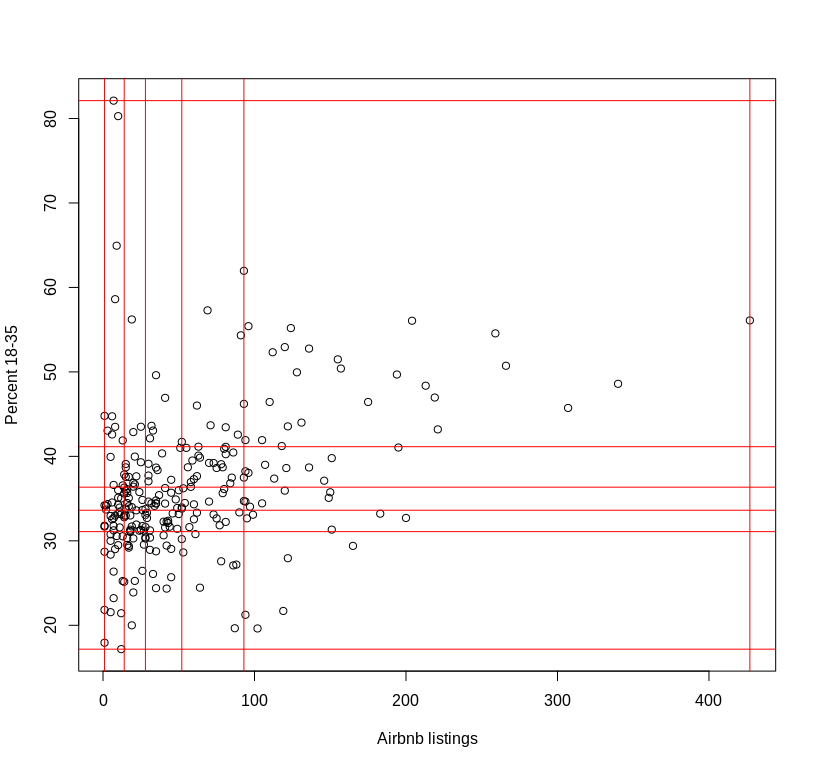
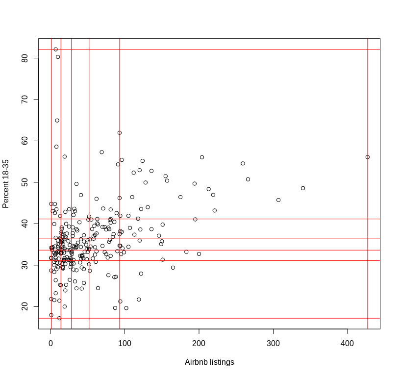

# Key idea:
# Classification
# (can be) based on
# data values
How it works
Classification is about putting things in buckets
For one variable all we do is decide break points
Think of this as segmenting a one-dimensional space in
which polygons are located by numbers attached to them
Add a variable
 

This idea on a map
Bivariate choropleths
 image from joshuastevens.net, see that page for more
image from joshuastevens.net, see that page for more
‘Letting the data speak’
Segmenting each variable separately not satisfactory
Misses interdepencies among variables
Better to use statistical clustering methods
These work off differences and similarities among
data points to find ‘natural’ clusters in data
# Features of k-means
## It is non-deterministic
## You specify the number of classes (_k_) ahead of time
## It will _always_ find _k_ clusters
## Taken together: this means analyst interpretation is critical
image source stackoverflow.com
Alternatives to k-means
Hierarchical clustering
These are all unsupervised methods and primitive examples of machine-learning